| SOURCE | TITLE| IMAGE MATCH | click to source page |
| photoismoney.com | 邮票记下真实的历史~ 匆匆岁月时光漫游 | 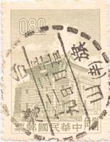 |
| photoismoney.com | 邮票记下真实的历史~ 匆匆岁月时光漫游 | 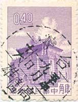 |
| eBay | ROC China - Scott #1219-10c Lilac "Chu Kwang Tower" Canc/LH 1959 | eBay | 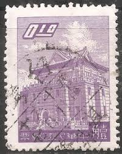 |
| Anyone interested ??1🙈🙊🙉👌 |  | |
| eBay UK | China stamps 1959 SG 313 ETC | eBay UK | 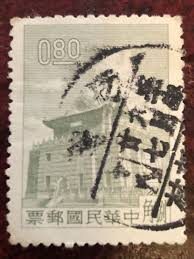 |
| eBay | Architecture Used Postage Chinese Stamps for sale | eBay | 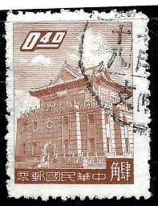 |
| Dreamstime.com | Building, Chu Kwang Tower, Quemoy Serie, Circa 1963 Editorial Stock Image - Image of philately, circa: 145673799 |  |
| Bob Shop | Bulklots and Thematic Collections - Stamps Thematic Architecture ULH was listed for 0.00 on 29 Mar at 14:01 by WilEC6084 in Venterstad (ID:638125358) |  |
| photoismoney.com | 邮票记下真实的历史~ 匆匆岁月时光漫游 | 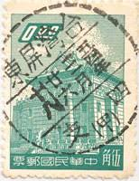 |
| photoismoney.com | 邮票记下真实的历史~ 匆匆岁月时光漫游 | 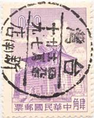 |
| HipStamp | China - #1271 Chu KwangTower - Used | Asia - China, General Issue Stamp / HipStamp | 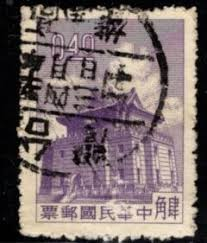 |
| Alamy | CHINA - CIRCA 1959: Postage stamp printed in China (Taiwan), shows Chu Kwang Tower, an island Quemoy, circa 1959 Stock Photo - Alamy | 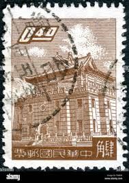 |
| Dreamstime.com | 262 Chu Tower Stock Photos - Free & Royalty-Free Stock Photos from Dreamstime |  |
| BigGo | 郵票8元的價格推薦- 2026年2月| 比價比個夠BigGo | 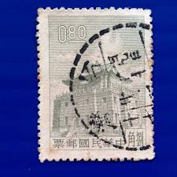 |
| eBay | RoC China - Scott #1224- $1.40 Yellow Green "Chu Kwang Tower" Canc/LH 1959 | eBay | 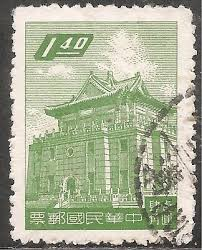 |
| Etsy | Vintage Postage Stamp From China - Etsy Australia | 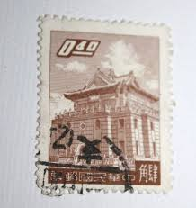 |
| HipStamp | Taiwan Scott#1221 1959 CHU Kwang Tower, Quemoy - Used | Asia - China, General Issue Stamp / HipStamp | 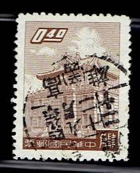 |
| alamy.de | CHINA - CIRCA 1959: Eine Briefmarke gedruckt in China gewidmet großer Sprung nach vorn in Eisen und Stahl Produktion, zeigt feiert th Stockfotografie - Alamy | 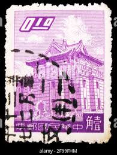 |
| 今日郵戳】內湖50.1.12 歡迎参觀雙魚宮數位郵票博物館http://suksm.org/ | 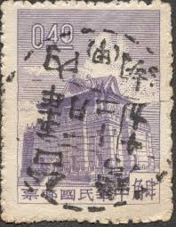 | |
| eBay | China -3c Brown "Chu Kwang Tower" Used - #3619 | eBay | 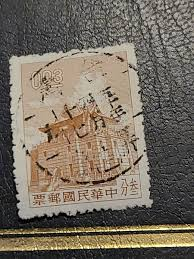 |
| HipStamp | Republic of China Taiwan #1221 used 1959 Chu Kwang Tower 40c | Asia - China, General Issue Stamp / HipStamp | 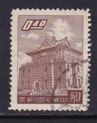 |
| eBay | BL) China 1921 used Stamps on pics x6 | eBay | 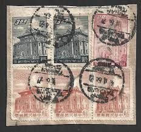 |
| Shutterstock | Old Taiwan Dollar: Over 413 Royalty-Free Licensable Stock Photos | Shutterstock | 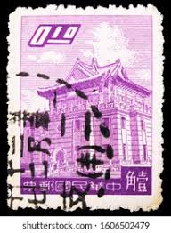 |
| eBay | China Taiwan Building 3 diff stamp used on TAKAU Medical College cover to USA | eBay | 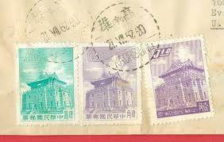 |
| eBay | ROC China - Scott #1221- 40c Brown "Chu Kwang Tower" Canc/LH 1959 | eBay |  |
| eBay | RoC China - Scott #1220- 20c Ultra "Chu Kwang Tower" Canc/LH 1959 | eBay | 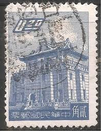 |
| eBay | CHINA TAIWAN 1224 - Chu Kwang Tower, Quemoy (pa58070) | eBay | 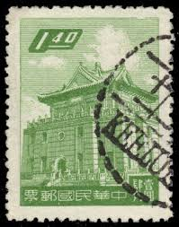 |
| Yahoo | A10早期台灣郵戳，銷雲林虎尾-龍岩村-代辦所戳，虎尾附近小地方，郵戳罕見，請見圖| Yahoo拍賣 | 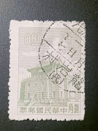 |
| Todocolección | formosa hb 57** - año 1993 - año nuevo chino - - Buy Antique stamps of China on todocoleccion | 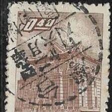 |
| photoismoney.com | 與歲月的郵票相遇~ 進入綫上的時光隧道 | 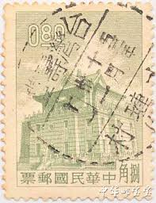 |
| Alamy | CHINA - CIRCA 1960: a stamp printed in the China shows Chu Kwang tower, Quemoy, circa 1960 Stock Photo - Alamy |  |
| Todocolección | p) 1999 taiwan, dragons circling two carps from - Buy Stamps from other Asian countries on todocoleccion | 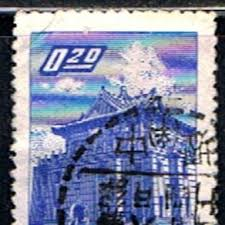 |
| 麦稀奇 | 台湾台北卅一支全戳五二年三月六日- 洪涛臻品微拍- 洪涛臻品微拍- 麦稀奇 | 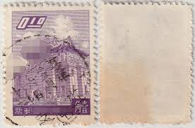 |
| Oahu Auctions | Qty 5 Envelopes w/ Stamps: Queen Elizabeth, Taiwan, Hong Kong - Oahu Auctions | 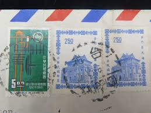 |
| eBay | China Stamps Briefmarken Sellos Timbres | eBay | 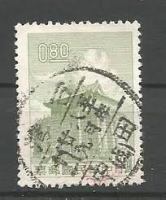 |
| photoismoney.com | 與歲月的郵票相遇~ 進入綫上的時光隧道 | 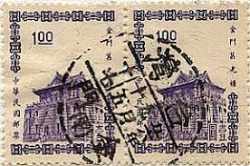 |
| eBay | ROC China - Scott #1220- 20c Ultra "Chu Kwang Tower" Canc/LH 1959 | eBay | 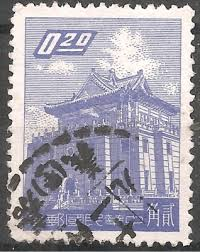 |
| Yahoo | 大三元】臺灣舊票-戳美-常86一版金門莒光樓郵票-面值0.4元肆角~銷戳澎湖49.2.22 | Yahoo拍賣 | 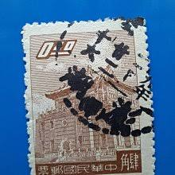 |
| Yahoo | 捜古苑」 高雄市警局局長于寶彥書法信札致牟綺文提及紹奎超魁100元起標| Yahoo拍賣 | 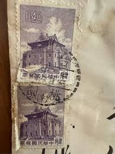 |
| BigGo | 台灣郵票的價格推薦- 2025年12月| 比價比個夠BigGo | 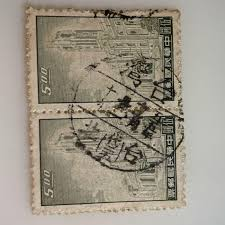 |
| suksm.org | 雙魚宮-數位郵票博物館 | 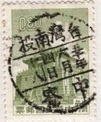 |
| eBay | CHINA TAIWAN 1396 - Chu Kwang Tower "1964 Brown" (pa76195) | eBay | 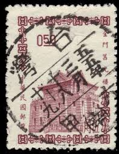 |
| BigGo | 總統府郵票的價格推薦- 2026年1月| 比價比個夠BigGo | 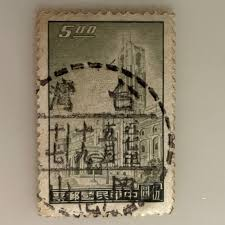 |
| HipStamp | China Taiwan-1964 Sc#1396 ZU Guong Tower- Used Block-Iverted Fancy Cancel-Vf | Asia - China, General Issue Stamp / HipStamp | 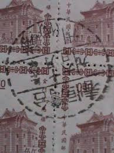 |
| Yahoo | 愛國大戲院柑仔店早期商品(明信片現況賣)S 891 | Yahoo拍賣 | 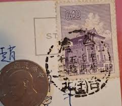 |
| BigGo | 總統府郵票的價格推薦- 2026年2月| 比價比個夠BigGo | 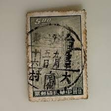 |
| eBay | 1960's China Taiwan postcard to Malaysia The Night Scene of Taipei Downtown 西門夜景 | eBay | 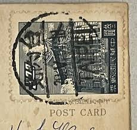 |
| photoismoney.com | 與歲月的郵票相遇~ 進入綫上的時光隧道 | 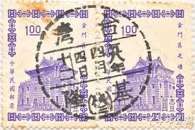 |
| Shutterstock | Republic China- Circa 1964 Stamp Printed Stock Photo 103942487 | Shutterstock | 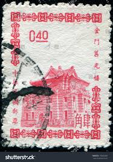 |
| photoismoney.com | 邮票记下真实的历史~ 匆匆岁月时光漫游 | 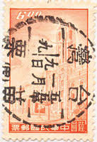 |
| BigGo | 總統府舊票的價格推薦- 2026年2月| 比價比個夠BigGo | 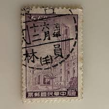 |
| eBay | CHINA TAIWAN 1222 - Chu Kwang Tower, Quemoy (pa52606) | eBay | 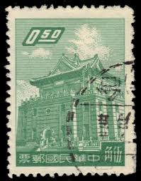 |
| eBay | China - 4.00 Green "Chu Kwang Tower" Used - #3644 | eBay | 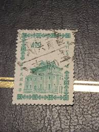 |
| eBay | 1959 ROC China Sc#1218a MNH NG VF | eBay | 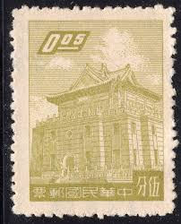 |
| Margipood | Shop - Page 109 of 279 - Margipood | 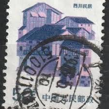 |
| FindPrice 價格網 | 大東郵票］總統府舊票銷澎湖（代一）戳- FindPrice 價格網 | 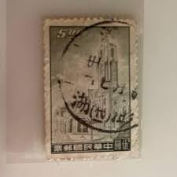 |
| eBay | People's Republic of China, Scott #17, $2000 Gate of Heavenly Peace, Used | eBay | |
| suksm.org | 雙魚宮-數位郵票博物館- 新山 | |
| Yahoo | 莒光樓第二版舊票(叁元貳角) 六枚| Yahoo拍賣 |